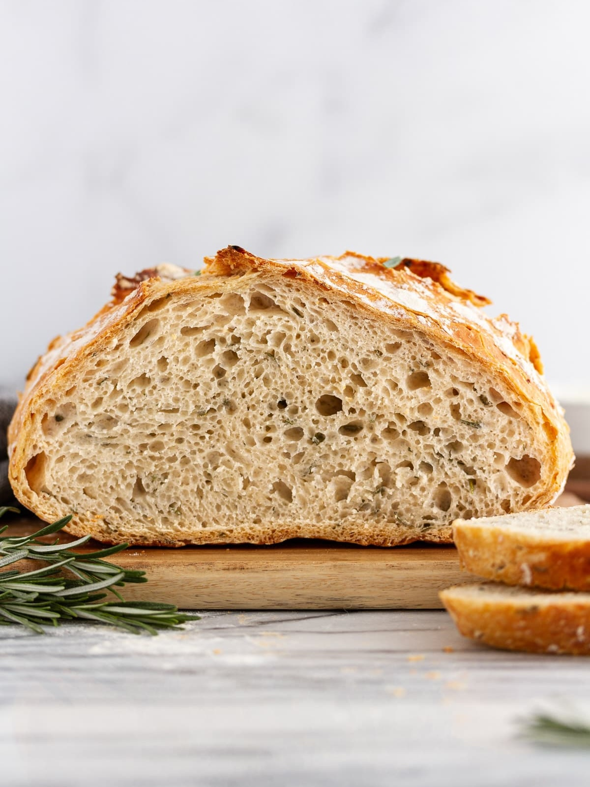

Rosemary Garlic Bread

Description
This Rosemary Garlic Bread is a great starting recipe for aspiring bakers, requiring no kneading.
Instead, you just need a quick stir, an overnight proof, and then in just one hour, you'll have a perfectly puffed, round, golden-brown loaf of homemade bread.
Best served with thick slices, slathered in butter, alongside a hearty soup.
Ingredients
- 3 cups - All-purpose Flour
- 2 tsps - Fine Sea Salt
- 1 tbsp - Active Dry Yeast
- 3 tbsps - Fresh Rosemary, roughly chopped
- 3 cloves - Fresh Garlic, minced
- 1.5 cups - Warm Water
Steps
- In a large bowl, whisk together flour, salt, and yeast. Pour in warm water and add rosemary and garlic. Use a wooden spoon to stir just until a shaggy dough forms. Be sure to mix until the garlic and rosemary are distributed throughout. The mixture will be wet and very sticky to the touch.
- Cover bowl tightly with plastic wrap and set aside in a warm place for 8 to 18 hours until dough rises, bubbles and flattens on top.
- Once dough is proofed, heat oven to 230°C. When preheated, place a 6 quart Dutch oven (with cover) in the oven for 30 minutes before baking.
- Dust the top of the dough with more flour, and working quickly with floured hands, fold two sides in towards the center then flip over. Re-flour hands and gently shape the dough into a ball by rotating it with both hands and pulling it under itself.
- Re-flour hands and scoop up the dough, placing it on a piece of parchment paper. Sprinkle the top of the dough lightly with flour and cover with a sheet of plastic wrap, then let rest 30 minutes
- Remove Dutch oven from oven. Uncover dough and carefully transfer to Dutch oven, with parchment paper beneath. Cover Dutch oven and return to oven.
- Bake bread 45 minutes covered, then another 10 to 15 minutes uncovered, until dough is baked through and golden brown on top. Let cool before slicing.
Home